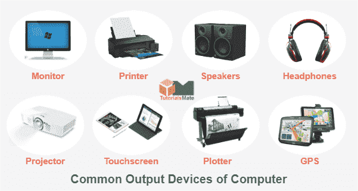

OutPut Devices
MainPage
Introduction to computer
Storage
InputDevices
Machine Cycle
Output Devices
Send Data and instructions out of the computer Examples:
- Monitor
- printer
- Speaker
- Plotter
- Projector

Types of Mointors
Monitor Specifition
ScreenSize
The Diagonal measurement of the screen surface inches (15,17,19,21 )Resolution
The Sharpeness of the images on the screen determined by the number of the oriontal and vertical pixelsDot Pitch
The distance between each pixel on the screen measured in mm
Printer
Is a peripheral device that produce a physical copy or hard copy o the computer output